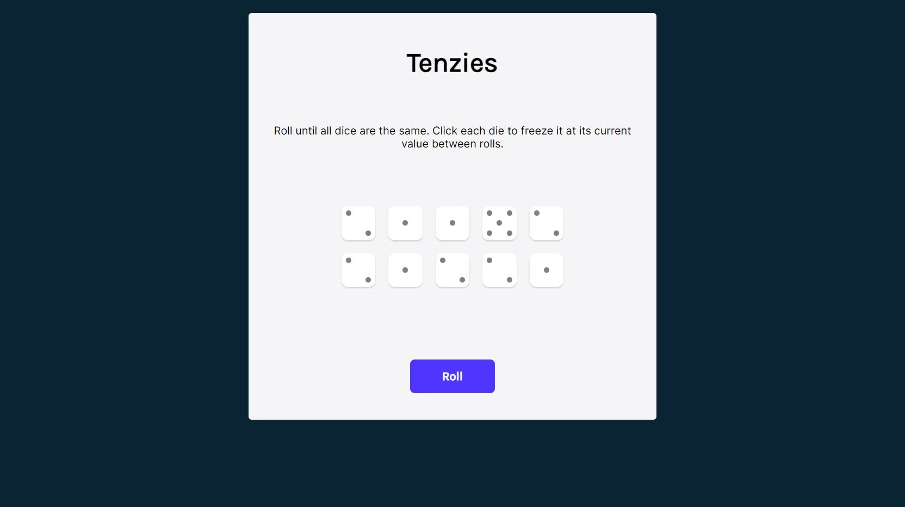
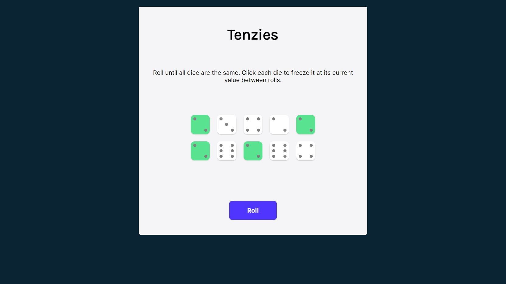
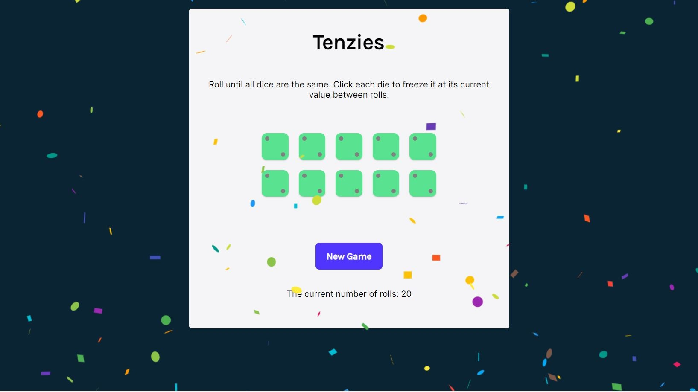
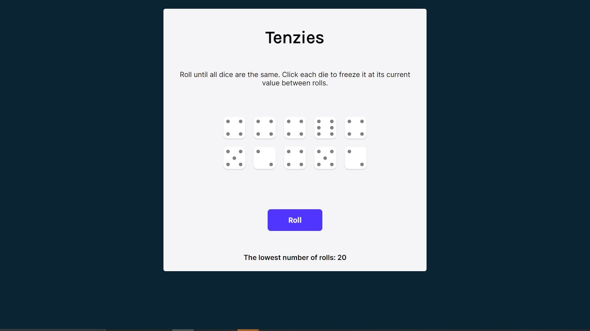
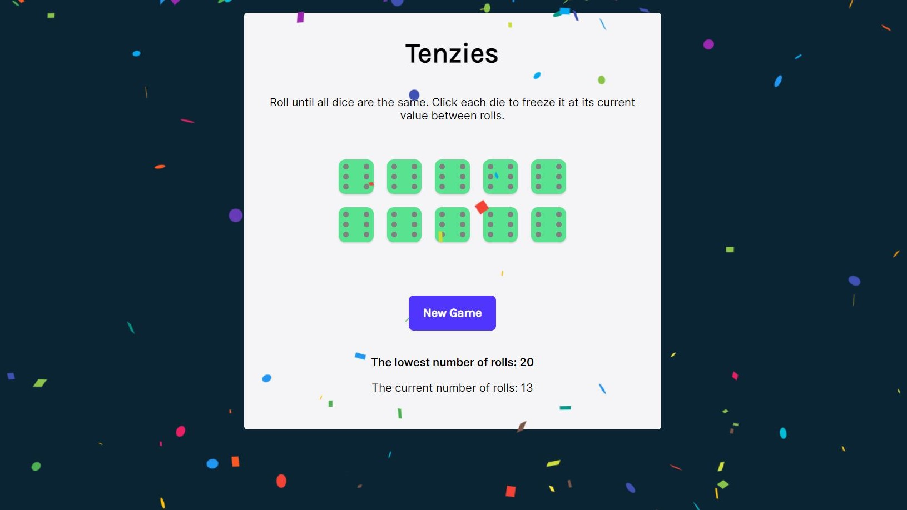
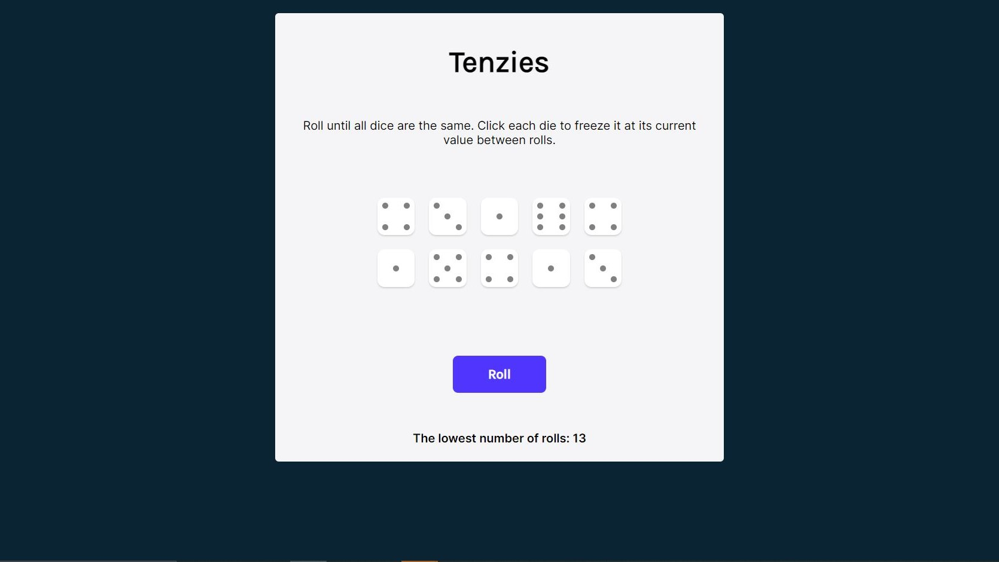

Project overview
This project is a digital version of a dice game.
The objective is to keep rolling ten dice until all of them display the same number.
I developed it as part of a series of challenges during the Learn React course on the Scrimba platform.
After completing the project on the platform, I added three additional features to the game.
First, I replaced the numbers on the dice with dots. Second, I introduced the ability to track the number of rolls.
Finally, I implemented a feature that saves the lowest roll count to local storage.
Technologies used
- React
- JavaScript
- HTML
- CSS
- Responsive design
Key features
The user is presented with ten dice, and the objective is to roll them until all the dice display the same number.

To achieve this, users can click on their chosen dice to hold them, preventing them from rolling during the next click of the roll button.

I implemented a feature that counts the rolls and, upon completion,
displays the current roll count alongside the lowest roll count from the local storage.

If the current game's roll count is lower than the local storage's count, the local storage is updated.


When the user starts a new game, the updated lowest roll count is displayed at the bottom of the game.

In the original version presented in the course, the dice displayed numbers.
I modified them to show dots using a grid layout.
The website is designed with responsive principles, ensuring an optimal user experience on various screen sizes and devices.
Challenges and solutions
During the development process, I encountered several challenges, such as displaying the correct die face using dots instead of numbers,
and saving and displaying the lowest number of rolls and the current number of rolls.
-
To display die face correctly, I created a 'faces' array that stores the dot representation for each die value as JSX elements,
utilizing a grid layout to accurately position the dots.
In the 'Die' component, I implemented the 'getDieFace()' function,
which iterates through the 'faces' array and returns the corresponding 'divs' (dot representation) based on the die's value passed as a prop.
This grid-based approach enabled me to display the appropriate dot representation for each die,
resulting in a visually appealing and intuitive interface for the user.
-
For saving and displaying the lowest number of rolls and the current number of rolls,
I used the 'useState' hook to manage the 'lowestNum' and 'countRolls' states.
I employed the 'findLowestNum()' function to compare and update the 'lowestNum' state.
The 'lowestNum' state is then saved in local storage, and both 'lowestNum' and 'countRolls' are displayed on the UI using conditional rendering.
Learning outcomes
Through this project, I have gained valuable experience and honed various skills:
- Problem-solving: Strengthened my abilities to identify and tackle challenges encountered during the development process.
- React.js proficiency: Enhanced my expertise in core concepts such as components, state management, and hooks like useState and useEffect.
- Custom reusable components: Acquired skills to create modular components like the 'Die' component, improving code organization and modularity.
- Unique ID generation: Utilized the 'nanoid' library for generating unique IDs for each die, enabling smooth interaction with individual dice elements.
- Grid layout design: Created visually appealing die face representations using grid layouts for accurate dot positioning.
- Conditional rendering: Mastered techniques to display different UI elements depending on the game state, such as showing 'New Game' when tenzies are achieved or displaying the current number of rolls.
- Data persistence: Investigated the use of local storage to save and retrieve the lowest number of rolls across multiple sessions.
Project source code:
Github